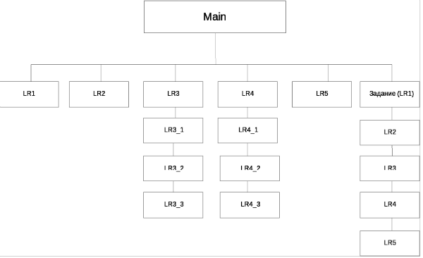

Модифицировать разработанную страницу в ЛР №2:
- скопировать страницу с ЛР№2 - описание страны и дать ей название LR3.html
- после названия страницы добавить по центру картинку с картой страны (например, 640x480);
- создать содержание из пунктов (пунктов а), б) и т.д.) в виде ссылок с переходом на соответствующие закладки;
- создать 3 страницы в той же папке, где и стартовая страница, для каждой из территорий (название, герб, заголовки для 2-х разделов: а) общая информация и б) таблица крупнейших городов с населением);
- сделать ссылки в тексте стартовой страницы на новые;
- создать новую папку в папке стартовой страницы с названием "picture" и поместит туда гербы/флаги каждой из территориальных единиц – при нажатии на которые осуществляется возврат на стартовую страницу;
- в одной из дополнительных страниц в качестве фона использовать картинку, для другой - в качестве фона использовать цвет;
- в конце каждой страницы добавить ссылку – возврат на стартовую страницу;
- с помощью тега map сделать картинку карты страны еще одним уровнем навигации (при щелке мыши на выбранную административную единицу на карте, осуществить переход на страницу данной области). Контуры выделения должны максимально совпадать с границами административной единицы на карте.
-
после названия страны / территории и герба, добавить меню в каждую страницу (на данном этапе только набор ссылок без оформления - это в 4-й ЛР), в соответствии со схемой:
 - Сформировать страницы с текстом уже конкретного Вашего задания для ЛР1-3 и подключить их к навигации.
- Отсутствующие файлы на схеме пока заменить заглушками. Не забудьте сразу добавить в них меню.